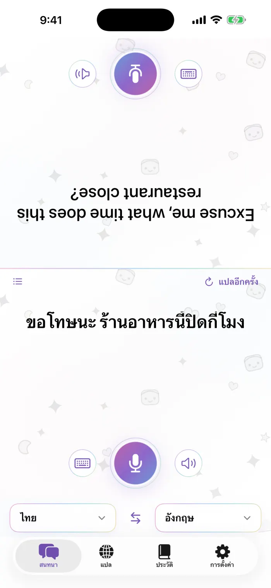
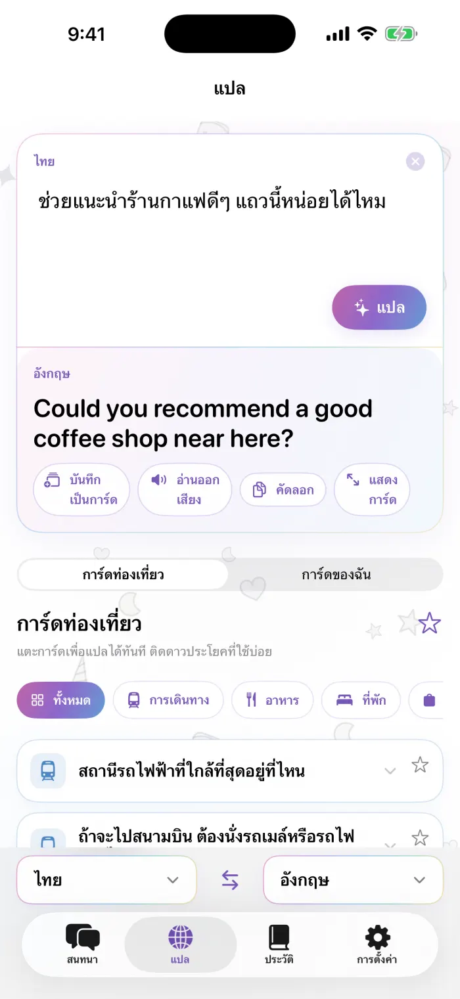
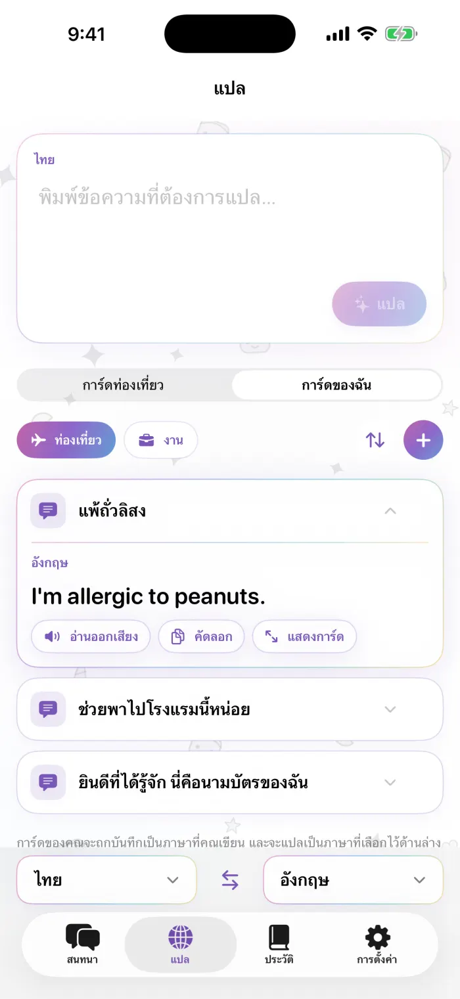
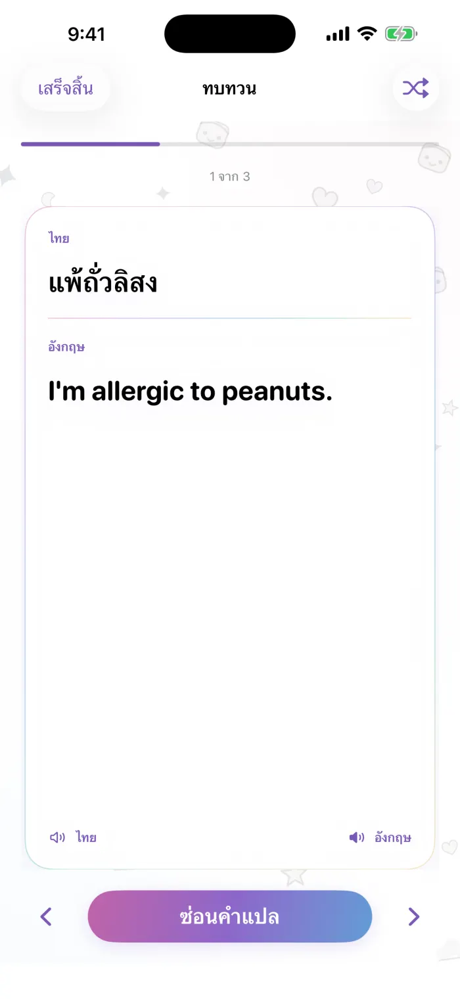

คุยกันต่อหน้า
หน้าจอแบ่งเป็นสองส่วน และฝั่งของคู่สนทนาจะกลับหัวลง วางโทรศัพท์ไว้ตรงกลางระหว่างกันได้เลย พูดหรือพิมพ์ก็ได้ แต่ละฝั่งจะอ่านคำแปลเป็นภาษาของตัวเอง
- จดจำเสียงพูดบนเครื่อง
- เล่นซ้ำได้ทุกประโยค
- อ่านคำแปลออกเสียง
แอปแปลภาษาสำหรับ iPhone
คุยกันต่อหน้า เก็บการ์ดวลีที่ใช้บ่อยไว้ในแบบของคุณ และแปลทุกอย่างบน iPhone ได้เลย แม้ไม่มีอินเทอร์เน็ต
ใช้งานได้แบบออฟไลน์ ดาวน์โหลดภาษาเพียงครั้งเดียว แล้วแปลได้แม้เปิดโหมดเครื่องบิน
เร็วๆ นี้บน App StoreiPhone · iOS 18 ขึ้นไป · ดาวน์โหลดฟรี
ขอถามหน่อยค่ะ ร้านอาหารนี้เปิดถึงกี่โมงคะ?
Excuse me, what time does this restaurant close?
เปิดโหมดเครื่องบินอยู่ก็ยังแปลได้ มาดูการใช้งานแบบรวดเร็วกัน
หน้าจอแบ่งเป็นสองส่วน และฝั่งของคู่สนทนาจะกลับหัวลง วางโทรศัพท์ไว้ตรงกลางระหว่างกันได้เลย พูดหรือพิมพ์ก็ได้ แต่ละฝั่งจะอ่านคำแปลเป็นภาษาของตัวเอง
พิมพ์หรือวางประโยคแล้วแปลได้ทันที คัดลอก เล่นเสียง หรือแสดงเป็นการ์ดตัวใหญ่เต็มหน้าจอให้คนตรงหน้าดูก็ได้
เก็บวลีที่คุณพูดบ่อยที่สุด ทั้งสำหรับเดินทางหรือทำงาน เป็นการ์ดในชุดที่คุณตั้งชื่อและจัดลำดับเองได้ บันทึกคำแปลหรือรายการในประวัติเป็นการ์ดได้ทุกอัน และครั้งต่อไปจะแปลเป็นภาษาที่คุณเลือก
การเดินทาง อาหาร ที่พัก ช้อปปิ้ง และการถามทาง แตะการ์ดแล้วแปลให้ทันที และติดดาวการ์ดที่ใช้บ่อยไว้ได้
ทุกบทสนทนาและคำแปลจะเก็บไว้บน iPhone จัดกลุ่มตามวัน และมีรายการโปรด โหมดทบทวนจะเปลี่ยนประวัติของคุณให้เป็นแฟลชการ์ด
การแปลใช้โมเดลบนอุปกรณ์ของ Apple ดาวน์โหลดภาษาเพียงครั้งเดียว ก็ใช้งานต่อได้แม้ไม่มีอินเทอร์เน็ต ไม่มีสิ่งที่คุณพูดหรือพิมพ์ถูกส่งไปยังเซิร์ฟเวอร์
หน้าจอจริงจากแอป หมายเลขตรงกับคำอธิบายข้างแต่ละหน้าจอ




ทุกอย่างที่ต้องใช้เพื่อสนทนาและแปลภาษาใช้ได้ฟรี ส่วน Pro เหมาะกับคนที่อยากสร้างการ์ดของตัวเองไว้มากๆ
เลือกได้ทั้งรายสัปดาห์ รายเดือน หรือซื้อครั้งเดียวใช้ได้ตลอดชีพ App Store จะแสดงราคาเป็นสกุลเงินในประเทศของคุณ